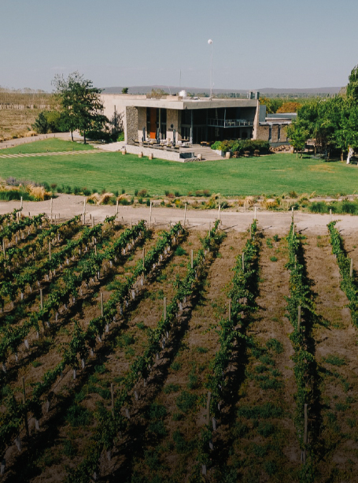
BODEGA
Penedo Borges
CÁTERING DE ALTA GAMA · MENDOZA
Eventos corporativos, sociales y bodas en las bodegas más
prestigiosas de Cuyo.
Una misma mirada, distintos escenarios.
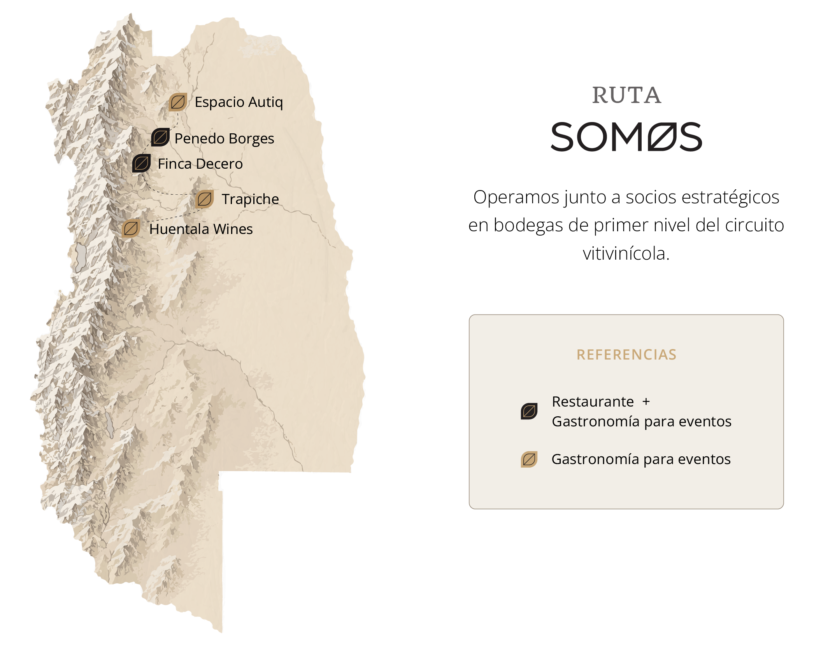

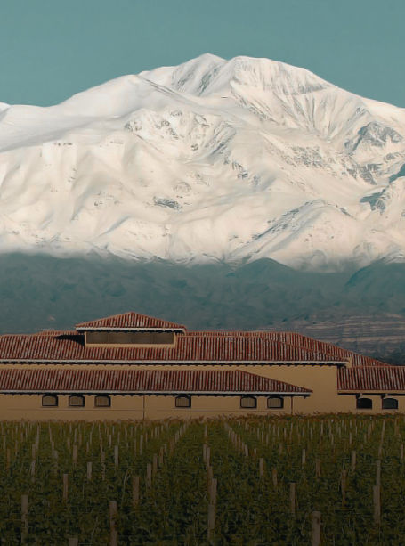
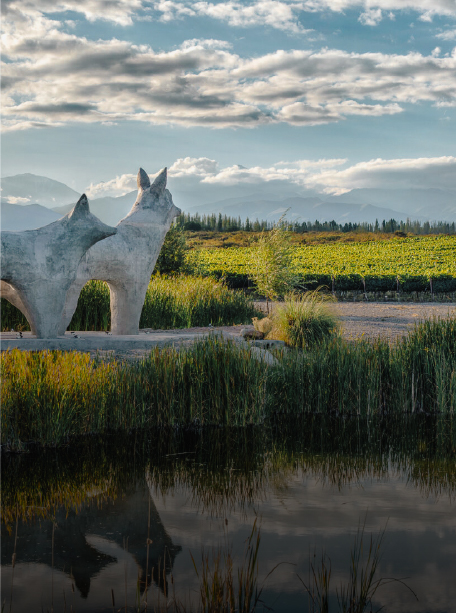
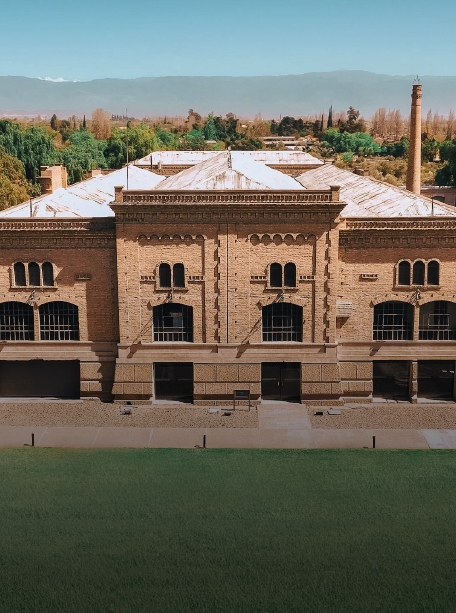
Enamorados del vino, la cocina y la aventura de crear.
Reunimos tierra e identidad en cada evento.
Experiencias vivas al rededor de fuego, la charcutería y la coctelería de autor.
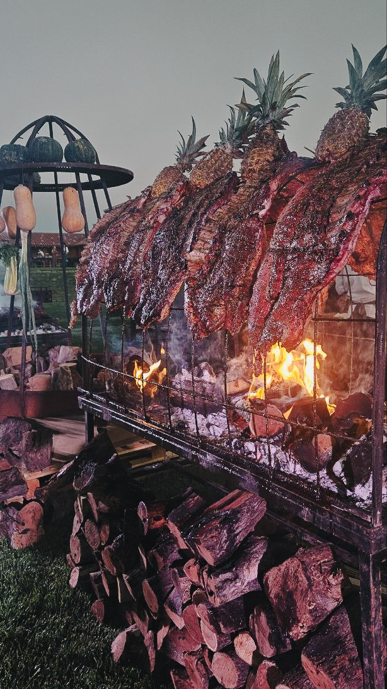


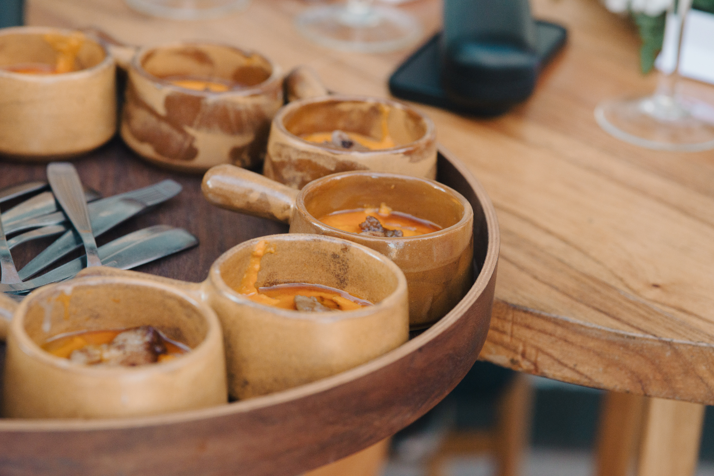


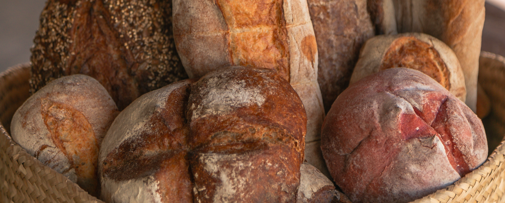
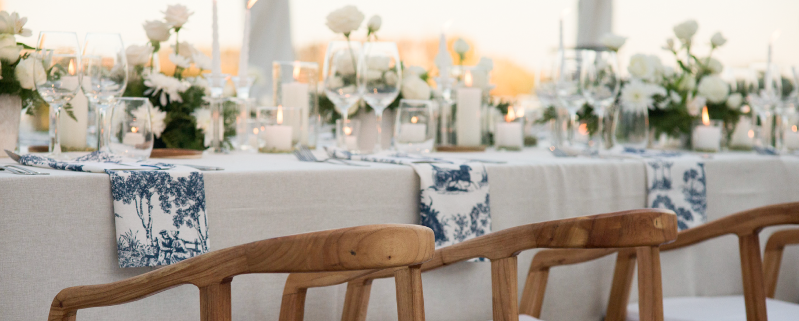
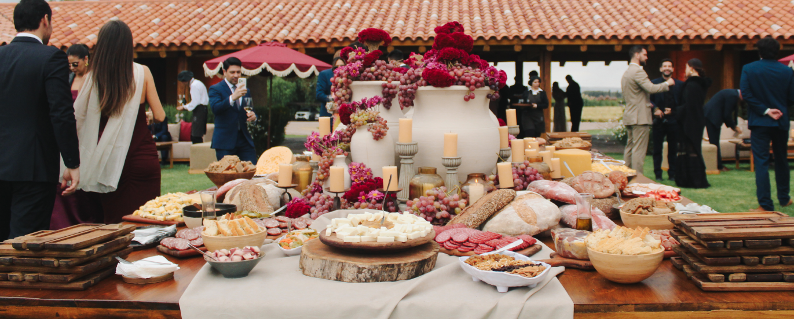
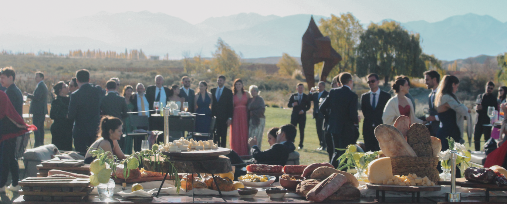
Bajo certificacion y supervisión
Menús de base vegetal de autor.
Opciones celíacas seguras.
Manejo personalizado por invitado.
Seba, Fran y Agus; cocina, desarrollo de proyectos y el mundo del vino reunidos en una historia de excelencia.

Sommelier profesional y Licenciado en Economía. Trayectoria internacional en cruceros de lujo (CUNARD) y gerenciamiento de hospitalidad en bodegas de primer nivel.

Referente de la cocina mendocina, reconocido por su trabajo con productos de estación y técnicas que revolucionan el sabor.
Estrella Michelin (Guía Michelin 2024, 2025).
The Best Chef Awards 2024, 2025.
LATAM #97 (The World's 50 Best 2025)

Experto en logística y catering de gran escala con más de 18 años de experiencia liderando eventos corporativos y deportivos masivos.
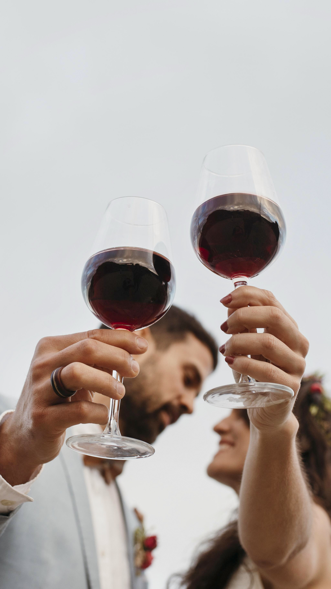
Vos soñás el casamiento en los viñedos, nosotros lo hacemos realidad con estándares internacionales de principio a fin.
Contanos qué imaginás y diseñamos la experiencia a medida.